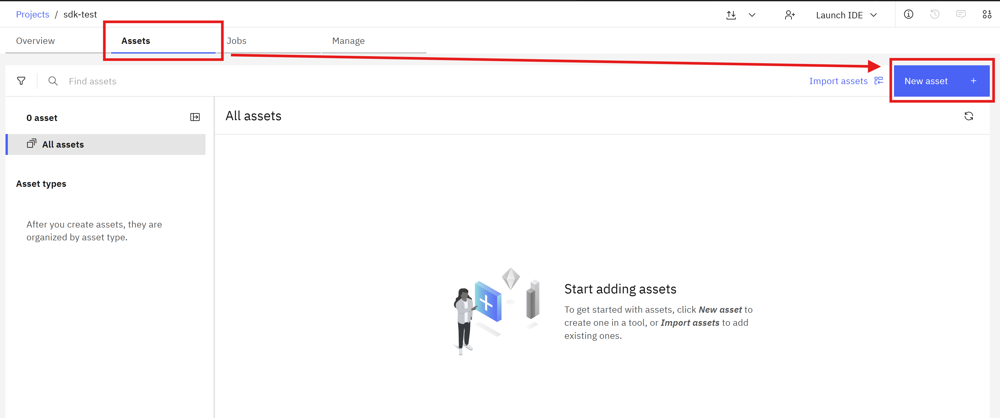
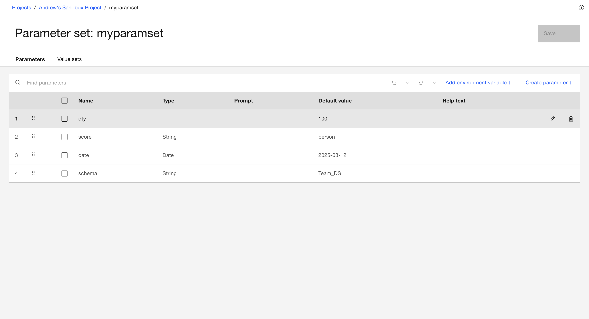
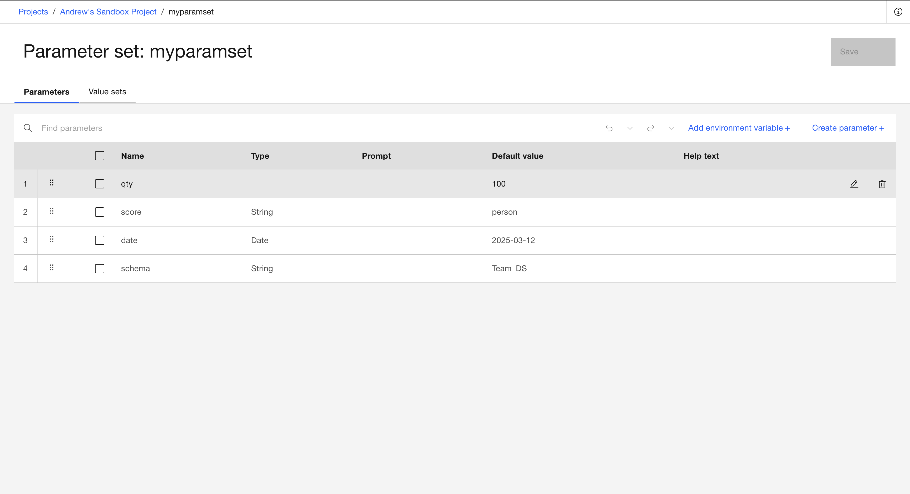
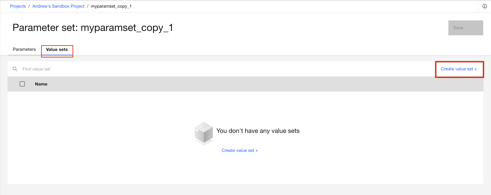
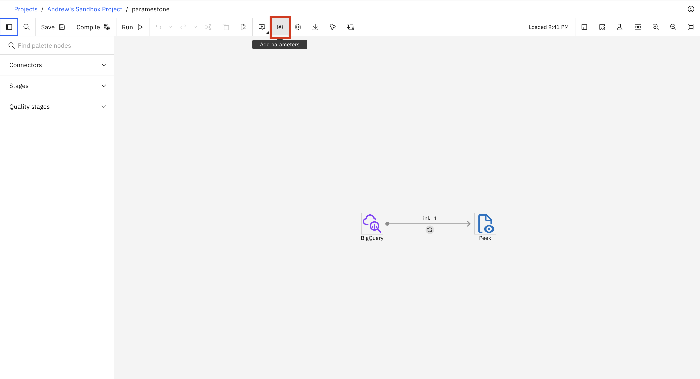
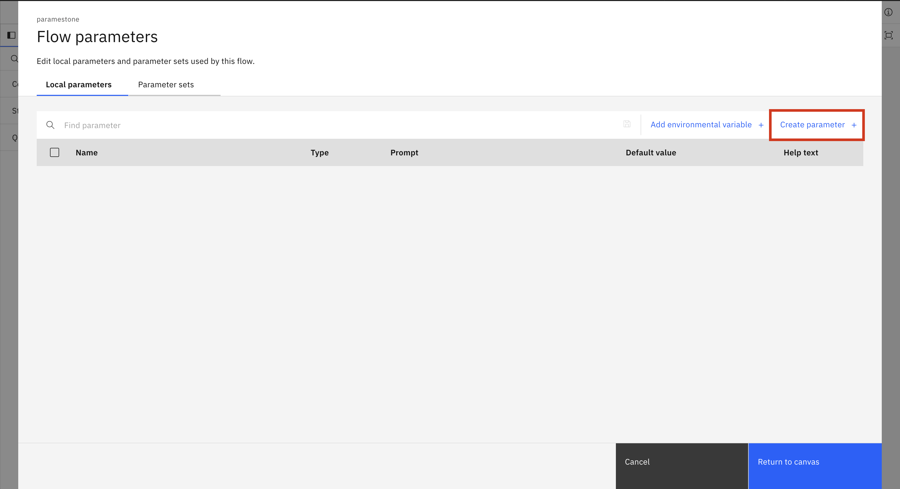
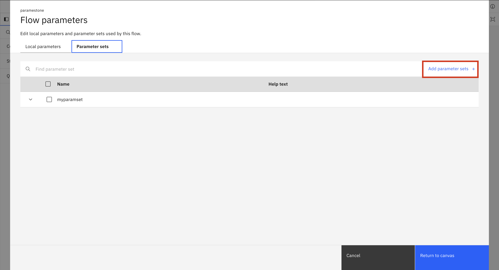

Parameter Sets#
A parameter set is an object that helps make your jobs more flexible and reusable. Parameter sets allow you to specify values at run time rather than hardcoding them.
The SDK provides functionality to interact with parameter sets.
- This includes operations such as:
Creating a parameter set
Retrieving parameter set
Updating a parameter set
Adding value sets
Adding local parameters
Using local parameters and parameter sets
Deleting a parameter set
Creating a Parameter Set#
In the UI, you can create a new Parameter Set by navigating to Assets -> New asset -> Define reusable sets of parameters.
{kind=link}

In the SDK, you can create a new ParameterSet object within a
Project,
by selecting the appropriate project from the Platform and then using
the Project.create_parameter_set() method to instantiate the Parameter Set.
You must provide a name to create parameter set.
>>> paramset = project.create_parameter_set('testparamset')
>>> paramset.add_parameter(parameter_type='INTEGER', name='qty', value='100')
ParameterSet(name='testparamset', parameters=[Parameter(name='qty', param_type='int64', value='100')], description='', value_sets=[])
>>>
>>> project.update_parameter_set(paramset)
<Response [200]>
Retrieving an Existing Parameter Set#
In the UI, you can get all Parameter Sets by navigating to Assets -> Configurations -> Parameter sets.

In the SDK, Parameter Sets can be retrieved using the Project.parameter_sets property.
You need to note that it doesn’t contain any parameters inside.
To get all parameters of a ParameterSet you need to call Project.parameter_sets.get() method
with a parameter_set_id.
This property returns a ParameterSet object.
>>> # Returns a list of all parameter sets
>>> project.parameter_sets
[...ParameterSet(name='testparamset', parameters=[], description='', value_sets=[])...]
>>>
>>> testparamset = project.parameter_sets.get(name='testparamset')
>>> testparamset
ParameterSet(name='testparamset', parameters=[], description='', value_sets=[])
>>>
>>> project.parameter_sets.get(parameter_set_id=testparamset.parameter_set_id)
ParameterSet(name='testparamset', parameters=[Parameter(name='qty', param_type='int64', value='100', valid_values=[])], description='', value_sets=[])
Updating a Parameter Set#
In the UI, you can update a Parameter Set by navigating to Assets -> Configurations -> Parameter sets and clicking the name of the Parameter Set you want to edit. This will take you to a new page where you can add, edit, and delete parameters.
 

{kind=link}
To add parameters to a Parameter Set in the SDK, you can use the ParameterSet.add_parameter() method.
This method requires a name and parameter_type and can also take a value, description, prompt, and valid_values. The valid_values argument is only used in a parameter of type list.
To remove parameters use the ParameterSet.remove_parameter() method which takes in the name of the parameter you wish to remove.
>>> paramset = (
... paramset.add_parameter(parameter_type='STRING', name='score', value='person')
... .add_parameter(parameter_type='DATE', name='date', value='2025-03-12')
... )
>>> paramset.remove_parameter('score')
ParameterSet(name='testparamset', parameters=[Parameter(name='qty', param_type='int64', value='100'), Parameter(name='date', param_type='date', value='2025-03-12')], description='', value_sets=[])
You can also directly change the name and description of the Parameter Set.
To apply these modifications to the Parameter Set we pass the instance to the Project.update_parameter_set() method.
This method returns an HTTP response indicating the status of the update operation.
>>> paramset.name = 'New Paramset Name'
>>> project.update_parameter_set(paramset)
<Response [200]>
>>>
>>> project.parameter_sets.get(name='New Paramset Name')
ParameterSet(name='New Paramset Name', parameters=[], description='', value_sets=[])
Adding Value Sets#
Value sets let you assign different values to the parameters in a parameter set. In the UI, to create a value set first navigate to Assets -> Configurations -> Parameter sets and click the name of the Parameter Set you want to edit. Then, click the Value sets tab to create, edit, or delete a value set.
{kind=link}
Here is the window that pops up when you click create value set.

In the SDK, you can create a ValueSet which requires the name of the value set. Then, add values to the value set by calling ValueSet.add_value() which takes in the name of the parameter and the value for the parameter. Finally, add the value set to the parameter set by passing the ValueSet object into ParameterSet.add_value_set().
If a parameter is not given a value its default value will be used. You can also call ValueSet.remove_value() with the name of the parameter to reset it to the default value.
>>> from ibm_watsonx_data_integration.cpd_models.parameter_set_model import ValueSet
>>> set_1 = (
... ValueSet(name='set_1')
... .add_value(name='qty', value='20')
... .add_value(name='date', value='2022-07-13')
... )
>>> set_1.remove_value(name='date')
ValueSet(name='set_1', values=[{'name': 'qty', 'value': '20'}])
>>>
>>> paramset.add_value_set(set_1)
ParameterSet(name='New Paramset Name', parameters=[Parameter(name='qty', param_type='int64', value='100'), Parameter(name='date', param_type='date', value='2025-03-12')], description='', value_sets=[ValueSet(name='set_1', values=[{'name': 'qty', 'value': '20'}, {'name': 'date', 'value': '2025-03-12'}])])
>>>
>>> set_2 = (
... ValueSet(name='set_2')
... .add_value(name='qty', value='40')
... )
>>> paramset.add_value_set(set_2)
ParameterSet(name='New Paramset Name', parameters=[Parameter(name='qty', param_type='int64', value='100'), Parameter(name='date', param_type='date', value='2025-03-12')], description='', value_sets=[ValueSet(name='set_1', values=[{'name': 'qty', 'value': '20'}, {'name': 'date', 'value': '2025-03-12'}]), ValueSet(name='set_2', values=[{'name': 'qty', 'value': '40'}, {'name': 'date', 'value': '2025-03-12'}])])
In this example both value sets have the qty parameter set to a new value while the date parameter is still the default value.
You can choose what value set you want a job to use by Editing the runtime settings of the job.
Note
In the UI, there is a way to choose a value set for a flow but this is not yet implemented in the SDK.
Adding local Parameters#
Local parameters are parameters that only exist within a single flow.
In the UI, you can add a local parameter by navigating to Flow parameters -> Local parameters -> Create parameter
 {kind=link}
{kind=link}
In the SDK, you can call the BatchFlow.add_local_parameter() method.
Just like the add_parameter method above, this method requires a name and parameter_type and can also take a value, description, prompt, and valid_values.
>>> batch_flow.add_local_parameter(parameter_type='STRING', name='tablename', value='cust_source')
>>> batch_flow.add_local_parameter(parameter_type='LIST', name='shoplist', valid_values=['tomato', 'lettuce', 'bacon'], value='bacon')
Using local parameters and Parameter Sets#
In the UI, you can use a Parameter Set in a flow by navigating to Flow parameters -> Parameter sets -> Add parameter sets and choosing the desired parameter set from the list.
{kind=link}
In the SDK to use a Parameter Set instance in a flow you can pass it to BatchFlow.use_parameter_set() method.
For local parameters there are no additional actions that you need to take after you Add a local parameter.
>>> batch_flow.use_parameter_set(paramset)
To use a parameter from a parameter set in your code you can use the following notation: '#New Paramset Name.schema#' where the name of the parameter set is followed by the parameter you wish to use.
For local parameters you do not need to put anything in front of the parameter name: '#tablename#'.
>>> bigquery = batch_flow.add_stage('Google BigQuery', 'BigQuery')
>>> bigquery.configuration.table_name = '#tablename#'
>>> bigquery.configuration.dataset_name = '#testparamset.schema#'
Using PROJDEF#
You can use the PROJDEF parameter set to contain the parameters and environment variable values for a DataStage flow, job, or job run to reference. You can read more about PROJDEF here. To add PROJDEF in the UI go to Flow parameters -> Add PROJDEF parameter

To use PROJDEF in the SDK you first need to create parameter_set with name ‘PROJDEF’ and then use it like a normal parameterSet.
>>> projdef_param = project.create_parameter_set('PROJDEF')
>>> projdef_param.add_parameter(parameter_type='INTEGER', name='qty', value='100')
ParameterSet(name='PROJDEF', parameters=[Parameter(name='qty', param_type='int64', value='100')], description='', value_sets=[])
>>>
>>> project.update_parameter_set(projdef_param)
<Response [200]>
>>>
>>> batch_flow.use_parameter_set(projdef_param)
BatchFlow(...)
>>>
>>> project.update_flow(batch_flow)
<Response [201]>
To add only some of the PROJDEF parameters use flow.use_projdef_parameter().
>>> projdef_param = project.parameter_sets.get(name='PROJDEF')
>>> projdef_param = project.parameter_sets.get(parameter_set_id=projdef_param.parameter_set_id)
>>>
>>> param = next((p for p in projdef_param.parameters if p.name == 'qty'), None)
>>> batch_flow.use_projdef_parameter(param)
BatchFlow(...)
>>>
>>> project.update_flow(batch_flow)
<Response [201]>
Deleting a Parameter Set#
In the UI, you can delete an existing Parameter Set by navigating to the Assets -> Configurations -> Parameter sets.

In the SDK to delete a Parameter Set instance you can pass it to Project.delete_parameter_set() method.
This method returns an HTTP response indicating the status of the delete operation.
>>> project.delete_parameter_set(paramset)
<Response [204]>